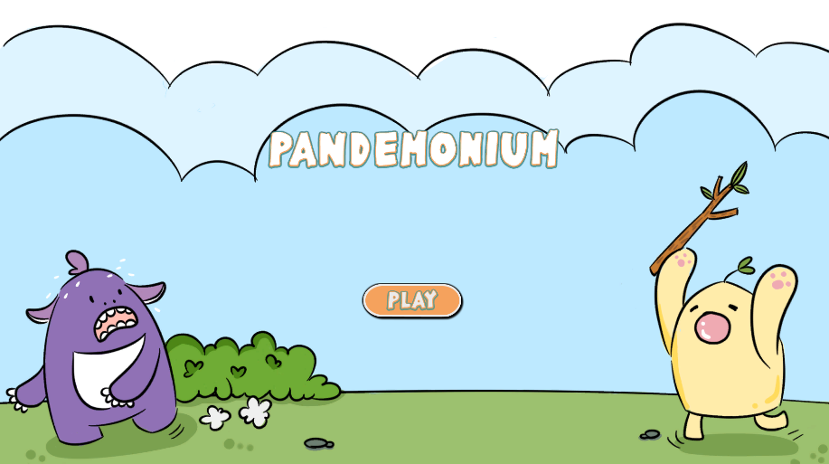

Projects
Pandemonium
Pandemonium is a 3D party game with several minigames, made as a semester long project in my Production Studio class. The project was developed in Unity, using GitHub to sync our work Early on in the project, I designed our code's architecture, including a collection of Prefabs I called "Props", designed to be very versatile, while still allowing non-programmers to use and implement games with them. I also created our character controller, using Unity's new Input System to implement couch multiplayer with controllers. Later on, I pivoted to designing computer players to fill in for missing players, so that every minigame had 4 players in it. While getting acquainted with the new input system was good experience, I think the main things I learned from this project was team related. Our team was six members, which is the largest I've worked on so far. Many of the challenges we faced were organizational, as well as communication and making sure we were all on the same page.
Genetic Tower Defense

This project was made in Unity, and was my first introduction to a large scale 3D Unity project. GTD is a tower defense game, in which the enemy stats are determined by a genetic algorithm. This means establishing a "survival of the fittest" for enemy types, with the fitness function being how far down the map they travelled. I followed a tutorial to get the basic set up done, but after that I was working entirely on my own, including the genetic algorithm. This project was great as I'm super interested in AI, and it was a unique way to incorporate that into a game. This project taught me important lessons about code architecture, and was my first major personal project.
Spooked!

Spooked was a semester long project, worked on with a team of 4. Spooked is a platformer, where your timer and health bar are one and the same. To balance this, the player gets more powerful as their health decreases. The game was made in the MonoGame Framework. My role on the team was organizing meetings, as well as enemy design and development. This was my first big group project, as well as my first game! I learned about formatting code in a team-member-friendly way, as well as furthering my skills with Object Oriented Design.